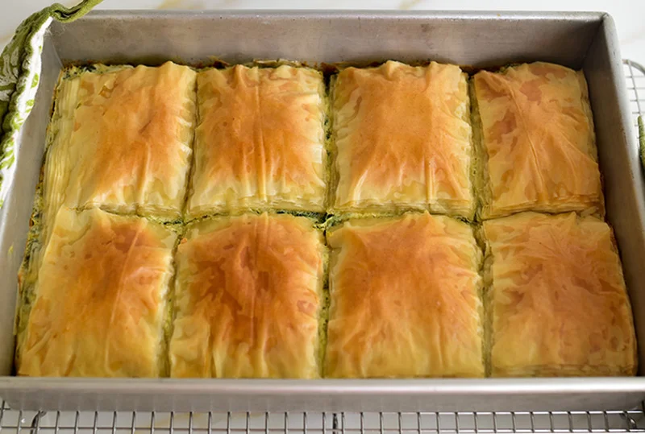

Spinach Pie

Spinach pie is a special dish consiting of spinach in between thin crispy dough called phyllo dough
Ingredients
- Frozen spinach
- Feta cheese
- Cottage cheese
- Cream cheese
- Eggs
- Scallions
- Fresh dill
- Calrified butter
- Phyllo dough
Steps
For the Filling:
- Squeeze the spinach in the sink to remove as much liquid as possible
- Stir the feta, cottage cheese and cream cheese until well incorporated
- Add eggs and stir to combine. Stir in the scallions, spinach, dill, salt and pepper
For the Phyllo Crust
- Brush the bottom of a 9 x 13 pan with clarified butter
- Unwrap one of the packs of phyllo dough and unfold it on the counter. Trim the long edge to fit in the pan. Place the whole pack (20 sheets) in the bottom of the pan
- Spread the filling over the phyllo dough
- Unwrap the remaining pack of dough and unfold it on the counter. Trim to fit in the pan. Place the whole stack on top of the filling
- Use a sharp knife to cut the phyllo dough into even sections, cutting all the way through to the bottom of the pan
- Pour the melted Clarified butter over the entire top of the phyllo dough. It may look like it’s resting on top but give it a minute, it’ll seep down into the cuts. You can tilt the pan to move the butter, so it covers the dough completely
- Bake the Spanakopita for 40-50 minutes or until golden. Cool for 10 minutes